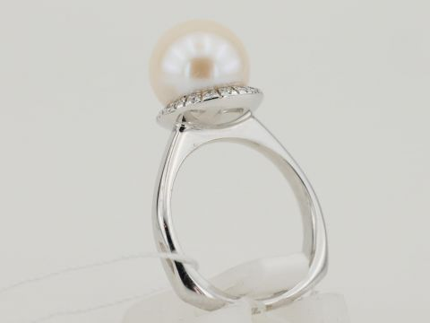
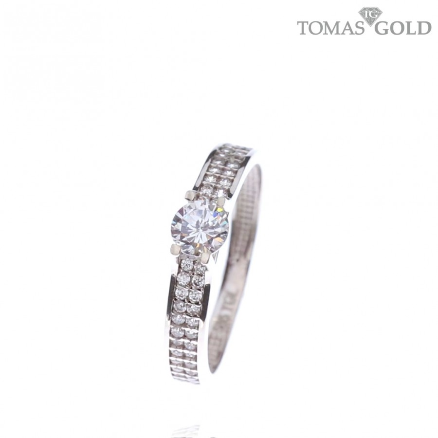

Vyriški Žiedai | Žiedai Vyrams Internetu - MEN'S VECTOR
 Katalogas {{totalCartQuantity}}
Vyriški žiedai
Senovės juvelyrai nieko nežinojo apie masinę produkciją, todėl visi vyriški žiedai buvo unikalūs. Vyriški žiedai turėjo savo praktinę paskirtį – jais buvo pažymimi dokumentai bei laiškai.
Šauliai saugojo savo pirštus dėvėdami vyriškus plačius žiedus, o monarchai dėvėjo juos kaip galios simbolį.
Vyriški žiedai taip pat buvo dovanojami kaip atlygis už ištikimą tarnystę. Žiedai vyrams buvo tam tikra valiuta bei karjeros simbolis.
Vyriški žiedai šiuolaikiniame pasaulyje
Dabar išgirdus žodžius „vyriški žiedai“ į galvą dažniausiai šauna mintis apie vestuvinį žiedą.
Nepaisant to, žiedai vyrams turi estetinę paskirtį bei gali būti dėvimi kaip vyriški aksesuarai .
Svarbiausia atkreipti dėmesį į dėvimų žiedų skaičių ir jų nepadauginti.
Rekomenduotinas didžiausias žiedų kiekis, dėvimas vienu metu – du/trys.
Taip pat žiedai vyrams būna įvairių modelių.
Kuo mažiau masyvus, tuo skoningiau atrodys ant jūsų rankos.
Daugelis žiedų yra metaliniai, tačiau pasitaiko ir kitokių medžiagų.
Žinoma, svarbu, kad vyriški žiedai būtų derinami su kitais aksesuarais kaip pakabukai .
Žiedai vyrams internetu
„Men's vector“ internetinėje vyriškų aksesuarų parduotuvėje rasite įvairaus modelių bei dizaino žiedų – nuo paprastų, minimalistinių iki masyvių, skoningai dekoruotų.
Žiedai vyrams čia yra įvairių spalvų – nuo auksinės, sidabrinės iki juodos su mėlynu ornamentu.
Įsigijus tokius žiedus, vėliau vertėtų atsižvelgti į vyriškų žiedų dėvėjimo patarimus, kurie buvo pateikti aukščiau.
Skaityti daugiau Filtras Juodas klasikinio stiliaus žiedas iš volframo vyrams MR060 {{33 | g_price}} Peržiūrėti prekę Platus aukso spalvos vyriškas žiedas MR089 {{39 | g_price}} Peržiūrėti prekę Sidabro spalvos klasikinio stiliaus žiedas iš volframo vyrams MR110 {{33 | g_price}} Peržiūrėti prekę Solidus vyriškas nerūdijančio plieno žiedas su agato akmeniu MR022 {{39 | g_price}} Peržiūrėti prekę Vyriškas auksinės spalvos nerūdijačio plieno žiedas su agato akmeniu MR004 {{33 | g_price}} Peržiūrėti prekę Vyriškas auksinės spalvos nerūdijančio plieno žiedas MR027 {{29 | g_price}} Peržiūrėti prekę Vyriškas auksinės spalvos žiedas su cirkonio akmeniu MR011 {{35 | g_price}} Peržiūrėti prekę Vyriškas juodas nerūdijančio plieno žiedas MR002 {{29 | g_price}} Peržiūrėti prekę Vyriškas juodos spalvos nerūdijančio plieno žiedas MR037 {{25 | g_price}} Peržiūrėti prekę Vyriškas nerūdijančio plieno aukso spalvos žiedas su juodos spalvos akmeniu MR128 {{35 | g_price}} Peržiūrėti prekę Vyriškas nerūdijančio plieno žiedas su agato akmenuku MR008 {{39 | g_price}} Peržiūrėti prekę Vyriškas nerūdijančio plieno žiedas su juodos spalvos akmeniu MR119 {{35 | g_price}} Peržiūrėti prekę Vyriškas sidabrinės spalvos nerūdijančio plieno žiedas MR028 {{29 | g_price}} Peržiūrėti prekę Vyriškas sidabro spalvos GUESS nerūdijančio plieno žiedas su juodos spalvos akmeniu MR105 {{39 | g_price}} Peržiūrėti prekę Masyvus žiedas vyrui su Poseidono trišakio atvaizdu MR082 {{29 | g_price}} Peržiūrėti prekę Stilingas juodas žiedas vyrui su aukso spalvos grandinėle MR072 {{25 | g_price}} Peržiūrėti prekę Vyriškas auksinės spalvos nerūdijančio plieno žiedas MR016 {{33 | g_price}} Peržiūrėti prekę Vyriškas juodos ir mėlynos spalvos žiedas su suktuko funkcija MR036 {{25 | g_price}} Peržiūrėti prekę Žiedas su besisukančia juoda grandinėle vyrui MR087 {{23 | g_price}} Peržiūrėti prekę Masyvus juodos spalvos žiedas vyrui MR088 {{33 | g_price}} Peržiūrėti prekę Vyriškas juodos spalvos žiedas papuoštas aukso spalvos juostele MR115 {{29 | g_price}} Peržiūrėti prekę Vyriškas juodos spalvos žiedas su cirkonio akmeniu MR109 {{33 | g_price}} Peržiūrėti prekę Vyriškas sidabro spalvos žiedas MR117 {{19 | g_price}} Peržiūrėti prekę Vyriškas sidabro spalvos žiedas papuoštas žaliai mėlyna juostele MR111 {{29 | g_price}} Peržiūrėti prekę Juodas GUESS vyriškas žiedas su sidabro spalvos juostele MR098 {{39 | g_price}} Peržiūrėti prekę Juodas vyriškas GUESS nerūdijančio plieno žiedas su juodos spalvos akmeniu MR102 {{39 | g_price}} Peržiūrėti prekę Nerūdijančio plieno pilkos spalvos vyriškas GUESS žiedas su juodos spalvos akmeniu MR101 {{39 | g_price}} Peržiūrėti prekę Prabangus vyriškas sidabrinės spalvos nerūdijančio plieno žiedas MR040 {{29 | g_price}} Peržiūrėti prekę Stilingas juodos spalvos GUESS nerūdijančio plieno žiedas vyrams su liūto galva MR113 {{45 | g_price}} Peržiūrėti prekę Tamsiai pilkos spalvos GUESS nerūdijančio plieno žiedas su raštais MR104 {{39 | g_price}} Peržiūrėti prekę 1 2 3 4Blog'o straipsniai
Informacija
Apie mus Pristatymas ir apmokėjimas Garantijos Atsiliepimai KontaktaiTeisinė informacija
Pirkimo-pardavimo taisyklės Privatumo politika Slapukų politikaKontaktai
Tel.: +370 6333 8702 El. paštas: info@mensvector.lt 2019 © MEN'S VECTOR Aksesuarai Laikrodžiai Diržai Piniginės Kortelių dėklai Sąsagos Papuošalai Apyrankės Odinės apyrankės Plieninės apyrankės Įvairaus stiliaus apyrankės Apyrankės iš karoliukų Grandinėlės apyrankės Žiedai Kaklo papuošalai Pakabukai ant kaklo Karoliai ant kaklo Rožančiai Grandinėlės ant kaklo Drabužiai Marškinėliai Prekė įkelta į krepšelį Pereiti į krepšelį